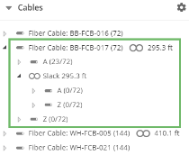

Expand the Cable tree. The slacks in the cable are listed.

Figure: Cable Slack
Right-click the slack. A context menu appears.
Click Split. A dialog appears that will allow you to choose the length at which the slack will be split. The default is halfway.